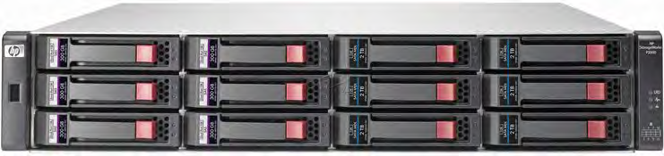
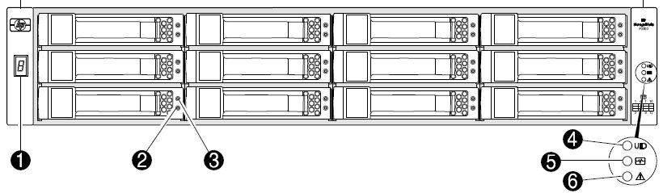
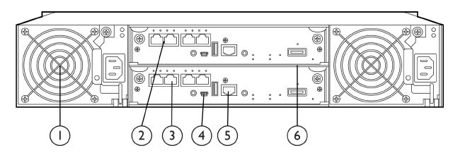
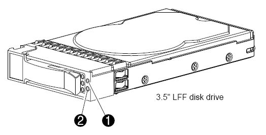
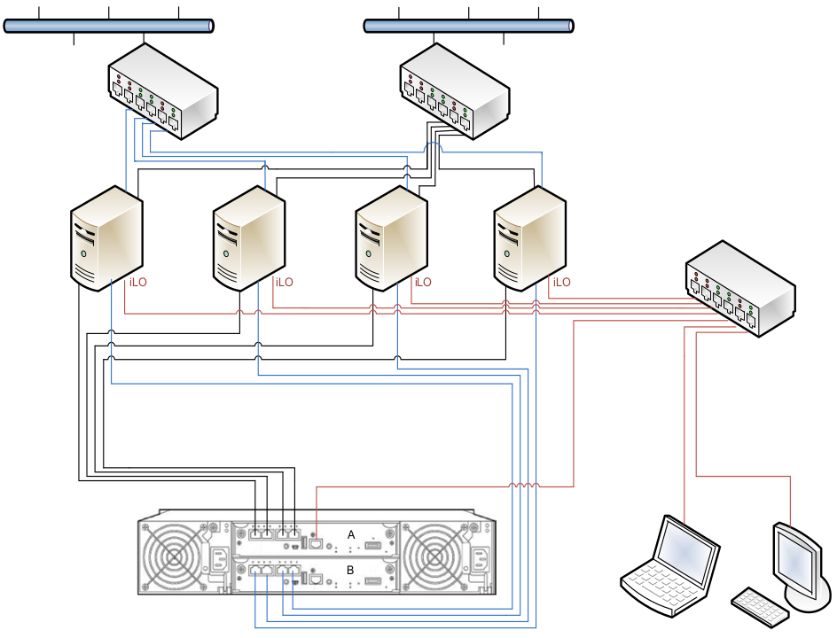

Дисковый массив – внешнее устройство хранения, состоящее из нескольких жестких дисков, представляет собой систему, состоящую из следующих компонентов:

Рисунок Д.1 – Внешний вид дискового массива HP MSA P2000 G3
На лицевой стороне корпуса дискового массива расположены световые индикаторы (рисунок Д.2) значение которых приведено в таблице Д.1.

Рисунок Д.2 – Индикаторы лицевой панели HP MSA P2000 G3
| Назначение | Пояснение |
|---|---|
| Идентификатор подключения | Зеленый – включен. |
| Позволяет видеть порядковый номер устройства, включенного в последовательность расширения (начинается с 1) | |
| Устройство включено / Активно | См. индикаторы привода диска |
| Сбой устройства | См. индикаторы привода диска |
| Индикатор устройства | Голубой – проинициирован. Выключен – индикатор отключен |
| Индикатор самодиагностики | Зеленый – электропитание включено с хотя бы одним источником питания. Выключен – оба источника питания обесточены |
| Индикатор нарушений | Оранжевый – имеет место нарушение. Причина определена, для разрешения требуется вмешательство. Выключен – нарушений нет |
На тыльной стороне корпуса дискового массива расположены дублированные контроллеры связи с пользователями и блоки питания.

Рисунок Д.3 – Дисковый массив. Вид с тыла
- блок питания
- порты iSCSI контроллера А
- порты iSCSI контроллера В
- порт miniUSB
- порт Ethernet для конфигурирования
- порт расширения
На рисунке Д.4 показано расположение индикаторов жесткого диска, значение индикации которых приведено в таблице Д.2.

Рисунок Д.4 – Привод жесткого диска с индикаторами состояния
- нарушение / норма (цвет оранжевый или голубой)
- Работает / Активность (цвет зеленый)
| LED 1 | LED 2 | Пояснение |
|---|---|---|
| Включен | Выключен | Нормальное состояние. Устройство включено, нет текущей активности |
| Мерцает редко | Выключен | Устройство активно и работает нормально |
| Выключен | Мерцает оранжевый (1 гц) | Отключено устройство недоступно. Предупреждение о возможном выходе из строя. Требуется уточнение |
| Включен | Мерцает оранжевый (1 гц) | В работе ввод / вывод активен. Получено предупреждение о возможности сбоев. Требуется уточнение |
| Мерцает редко | Мерцает оранжевый (1 гц) | Устройство активно, но получено предупреждение о возможности сбоев. Требуется уточнение |
| Выключен | Оранжевый. Светит постоянно | Устройство отключено, нет активности. |
| Выключен | Голубой. Светит постоянно | Отмечена поломка или критичный сбой |
| Включен или мерцает | Голубой. Светит постоянно | Отключено. Устройство выбрано прикладным управляющим приложением (SMU) |

Рисунок Д.5 - Схема сетевых соединений